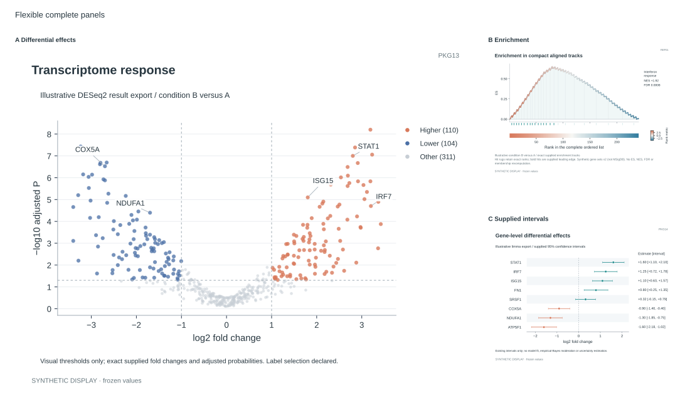
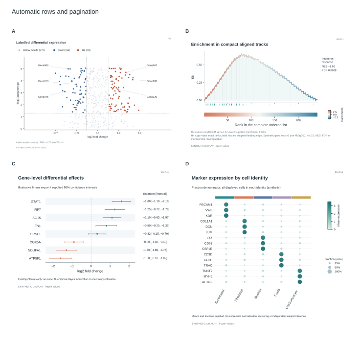
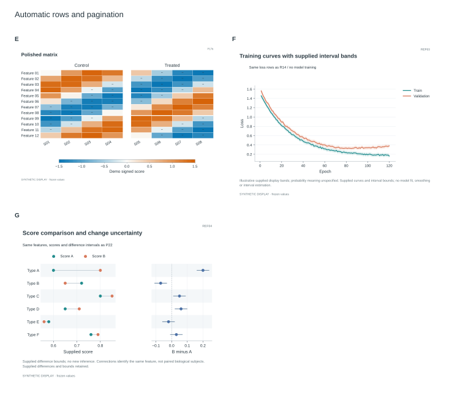

Asymmetric/Asymmetric-page-01.svg

PKG13, REF01, PKG14
Layout request · Complete SVGTwo layout demonstrations using existing synthetic frozen components: unequal columns and spans; automatic rows with pagination. No new chart type or inference. Screen examples do not establish manuscript-size acceptance.

PKG13, REF01, PKG14
Layout request · Complete SVG
P09, REF01, PKG14, PKG16
Layout request · Complete SVG
P17b, REF03, REF04
Layout request · Complete SVG